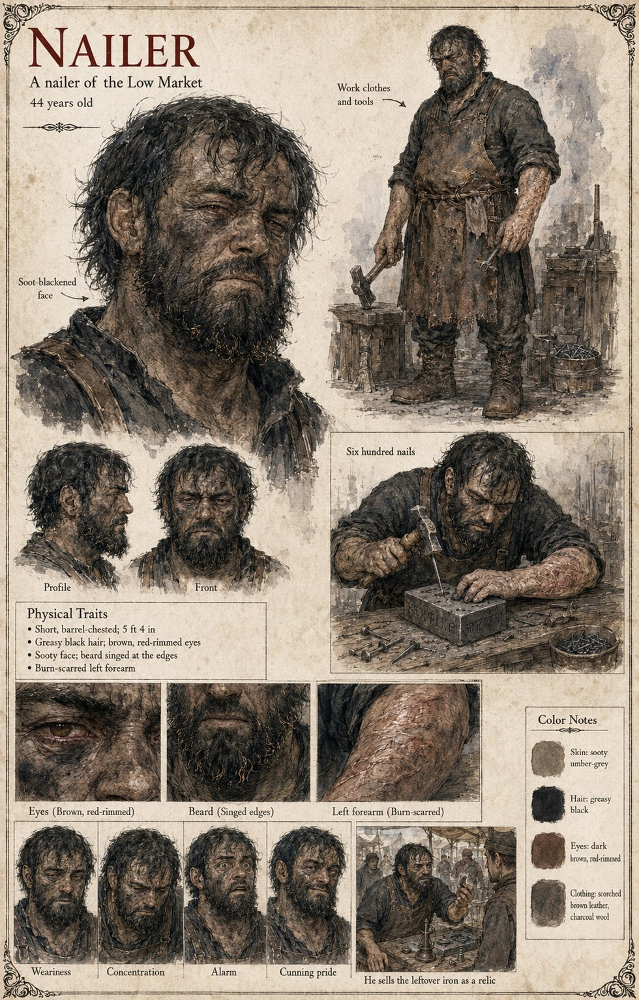

Nailer
A nailer of the Low Market · buyer of the Guild's die-block · 44 years old by his sheet
The man to whom Sigebert Marl, staying behind to wind up the Guild's books on the day it adjourns, sells the Hammer-and-Oath die-block that afternoon for eleven pence a pound as scrap, with the Proof-Post and the ash-hoop thrown in. The manuscript gives him only what he does with it. He strikes six hundred nails from the die before he notices what is on it, and is said, in later years, to have sold the rest of the iron as a relic of the Hierarch's own anvil, at a profit that the Guild would have called unsound. The Hammer-Oath, which had Proved ten thousand swords and decided the fate of kings by the Third Stroke, is remembered in Marnholt for the next two generations chiefly for the quality of its nails.
A notice cut in capitals by a nailer's apprentice, saying that the sack itself is the property of the Crown and that its power adheres by contact in the Sable Dust, is posted on the trestle at the Hall door where Sigebert Marl sells it; the manuscript does not say whether it is this nailer's apprentice. The manuscript gives him a trade and a price. The sheet's forty-four years, short barrel-chested 5 ft 4 in build, greasy black hair, brown red-rimmed eyes, sooty face, singed beard and burn-scarred left forearm are its own, with the leather apron, hammer and nail-tub. Its panels, Six Hundred Nails and He sells the leftover iron as a relic, are the manuscript's two clauses; its expressions run Weariness, Concentration, Alarm and Cunning Pride.
“sold the rest of the iron as a relic of the Hierarch's own anvil”